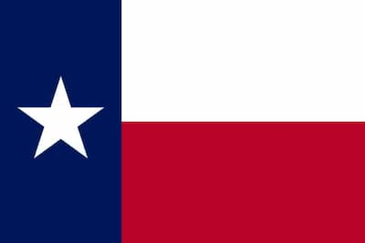

Conner Monson
About Me
Hey Yall, I am Conner Monson. I live in the great state of Texas. I recently got called to serve a mission in Budapest Hungary, and I will be starting in August. In my free time, I like to work out, rock climb, and read books. I also love playing sports. Some of the sports that I have played are: baseball, football, soccer, rugby, track, swimming, diving, and a few more. Last year I ran a marathon without training, and it took 6 hours and 30 minutes.
Texas, USA

Texas is the second-largest state in the United States, located in the South. Its capital is Austin, and major cities include Houston, Dallas, and San Antonio. Historically, Texas was an independent nation before joining the U.S. in 1845, which contributes to its strong state identity and culture. Today, it’s known for its mix of cultures, southern hospitality, and iconic symbols like cowboy traditions, barbecue, and country music.